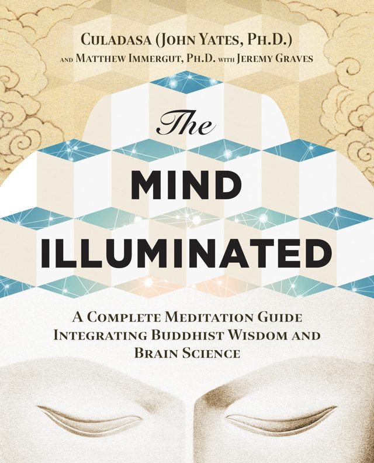

The book
The Mind Illuminated
A complete meditation guide integrating Buddhist wisdom and brain science.

Written by Culadasa (John Yates, Ph.D.) with Matthew Immergut, Ph.D. and Jeremy Graves, and first published by Dharma Treasure Press on 6 October 2015.
The book sets out ten stages of meditative development, from establishing a daily practice to tranquility and equanimity, with clear instructions for each stage and an account of how the mind works drawn from both the Buddhist tradition and cognitive science.
“A systematic, hands-on manual, The Mind Illuminated will be a great help to anyone who wants to completely fathom the process of meditative development in all its stages. Culadasa gives us the full conceptual framework together with complete instructions for putting it into play. In largely western language, with help from wonderful images and diagrams, this book brings the path of meditation to life”
Search the book
The book itself is not on this site. A search shows where a word appears (page, chapter, heading, paragraph and line, in the 2015 first edition) and, for teaching terms, a few short phrases, so you can find the passage in your own copy.
The ten stages
From the first sit to equanimity
- NoviceEstablishing a practice
- NoviceInterrupted attention and overcoming mind-wandering
- NoviceExtended attention and overcoming forgetting
- SkilledContinuous attention and overcoming gross distraction and strong dullness
- SkilledOvercoming subtle dullness and increasing mindfulness
- SkilledSubduing subtle distraction
- TransitionExclusive attention and unifying the mind
- AdeptMental pliancy and pacifying the senses
- AdeptMental and physical pliancy and calming the intensity of meditative joy
- AdeptTranquility and equanimity
Milestones: continuous attention to the meditation object (after stage 3); sustained exclusive focus of attention (after stage 6); effortless stability of attention (after stage 7); persistence of the mental qualities of an adept (after stage 10).
Reviews
What teachers and authors say
“This comprehensive book takes me on a journey each time I pick it up… Culadasa reminds me of the art of meditation as the art of living consciously. He takes me through the science of the practice straight to the adventure of sitting, and offers context through sustainable, practical applications and tools. This book is full of wisdom, story, and creativity, and I’ll be glad to have it as a reference for many years to come”
“This book is a rare and valuable treasure, providing a detailed, step-by-step account of how meditation practice progresses. Culadasa is the real deal, a living adept with decades of experience”
“Culadasa has given us a clear, detailed, contemporary map of meditation, beautifully attuned to our householder lives. Through his mastery of both the science and art of conscious living, Culadasa imparts the practices and confidence we need to walk the path of liberation through all the stages to Awakening. I love his friendly, encouraging teaching!”
“In a time where meditation and its twin sister, mindfulness, have become the fads du jour , Culadasa gives us the real deal in this encyclopedic handbook. If you ’re serious about meditation, The Mind Illuminated should be on your bookshelf”
“Essential reading for anyone interested in meditative development from any tradition. At once comprehensive and also very easy to read and follow in practice, this is the most thorough, straightforward, clear, and practical guide to training the mind that I have ever found. A remarkable achievement”
“The Mind Illuminated is an extraordinary accomplishment. Culadasa has distilled his many years of meditative practice and teaching, his deep background in Theravada and Vajrayana traditions, and his extensive knowledge of cognitive science and neuroscience, to provide a unique and highly practical guidebook to meditation practice. The granular detail that Culadasa provides regarding various experiences along the path, and his practically grounded advice for dealing with obstacles and developing specific skills, are unique in the published literature on meditation. Regardless of the particular tradition in which one practices, or the amount of one’s practice experience, there is a cornucopia of wisdom and detailed guidance here that merits careful study and practice. This is a true jewel of a book that belongs on the desk or night table of every meditation practitioner”
“With wisdom, clarity and grace, Culadasa has written an invaluable manual for awakening. I believe this book will become one of the “Top 10 Must Reads” for anyone on the spiritual path for years to come. Helpful for beginning meditators, and valuable for advanced meditators who are already committed to meditation but have not yet experienced the fruits of consistent practice"”
“Writing with warmth and clarity, Culadasa brings a lifetime of investigation into Buddhism and neuroscience to his descriptions of the tasks and nuances of meditation. Though it is often encouraged, a meditation practice is not often explained. The Mind Illuminated provides comprehensive, step-by-step guidance about how to actually do it, how to handle the many hindrances that might stop us from practicing, and how the mind benefits when we do meditate regularly. A masterful and inspiring guide, Culadasa encourages us to savor the process that leads to becoming fully conscious”
“This book does an outstanding job of both constructing a cognitive theory of how the mind works and presenting a detailed handbook for learning and mastering meditation. The result is a beautiful integration of theory and practice, whose parallel strands lead to experientially, and account for conceptually, the radical shift in consciousness we call awakening”
“The Mind Illuminated provides among the greatest syntheses I’ve ever seen of concepts from across the spectrum of psychological research and theory. The book integrates knowledge from areas as diverse as cognition and neural systems, psychoanalytic notions of unconscious processes and catharsis, theories of William James, and third-wave strategies for emotion regulation. It also provides a valuable step-by-step instruction manual for mental training to focus attention, while developing self-insight and deep psychological healing. The secular nature of the instructions allows for bringing meditation into the therapy relationship with- out dogma and without the risk of either supporting or contradicting clients’ religious views”
Testimonials
What his students say about the Mind Illuminated method
“I’m from Queensland, Australia and have been hugely influenced by Culadasa’s teachings. I still listen to his range of audio recordings weekly and am eagerly anticipating the release of his book. His wisdom and clarity of expression has undoubtedly influenced my evolution in a profound way and my life has truly transformed, simply by living it from an increasingly informed, appropriate, powerful and integrated paradigm.”
“I have had the privilege of attending two group meditation retreats given by Master Culadasa. His teachings are clear, comprehensive and easily adopted. I accomplished more in three days with him, than in three months on my own.”
“Upasaka Culadasa was recommended to me some years ago by a friend and mentor who is himself a very accomplished Buddhist teacher. I’ve studied with many great teachers over the past 40 years, including great masters in the Tibetan tradition and leading Western teachers in both the Tibetan and Theravada tradition, but I have to say that when it comes to clarity and usefulness of advice for how to really blossom in meditation Culadasa is the most astonishing teacher, Eastern or Western, I have ever encountered. His grounding in modern science, precision, kindness and profound realization are unique in my experience. I feel so very fortunate to have encountered his teachings and have met and talked to so many other people at Culadasa’s teachings who have come to the same conclusion that I have: while there are many good teachers out there, Upasaka Culadasa is a true master of meditation – a rare jewel of the Dharma.”
“I had meditated for a number of years before I began to study with Culadasa; and, I had had the great fortune to have studied with illustrious teachers. It was Culadasa’s simple and eminently pragmatic understanding of mindfulness, as “the optimal balance between attention and awareness,” which turned a light on for me. My meditation practice is now deeper and more precise as a result. Sure, one’s psycho-emotional balance is an unstable equilibrium; it takes conscious effort. But now I understand the practicalities of the balance. That for me has made all the difference. I am fortunate, and very grateful to be able to pass on Culadasa’s common sense instructions to my students. With deep love and appreciation”
“Recalling numerous pieces of very clever advice from Upasaka Culadasa’s teachings transformed my month-long shamatha retreat from a frustrating struggle to a fascinating, rewarding challenge. Instead of battling to focus, I found the various aspects of my mind working together harmoniously, which facilitated an exciting growth spurt in my mindfulness skills and infused my meditation experiences with an enthusiastic joy. Priceless advice.”